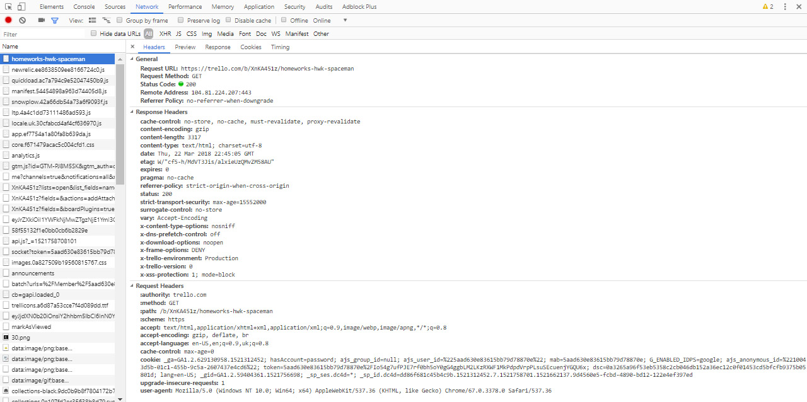
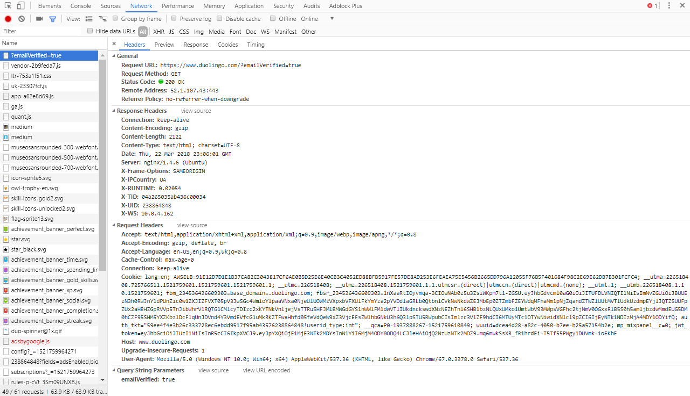
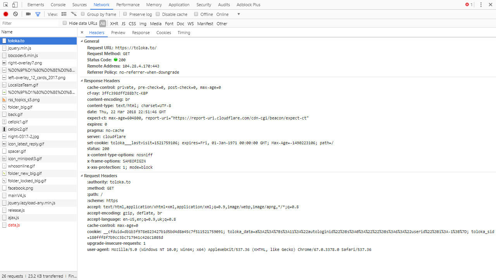
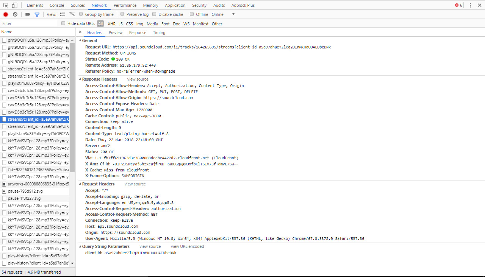
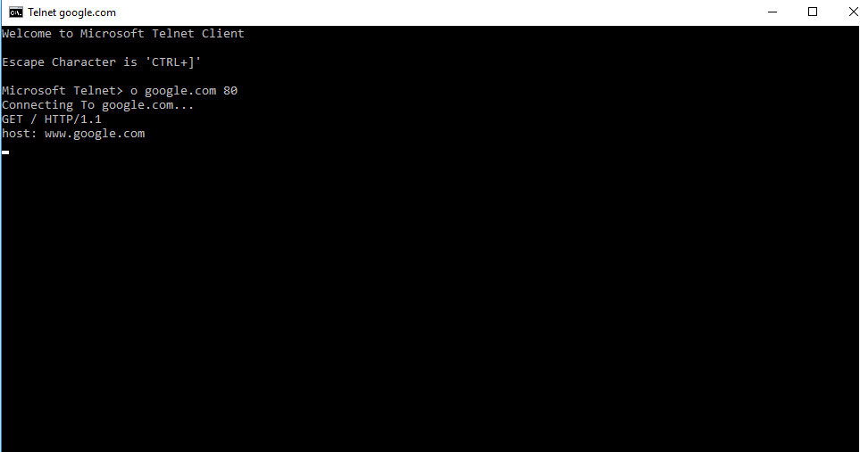
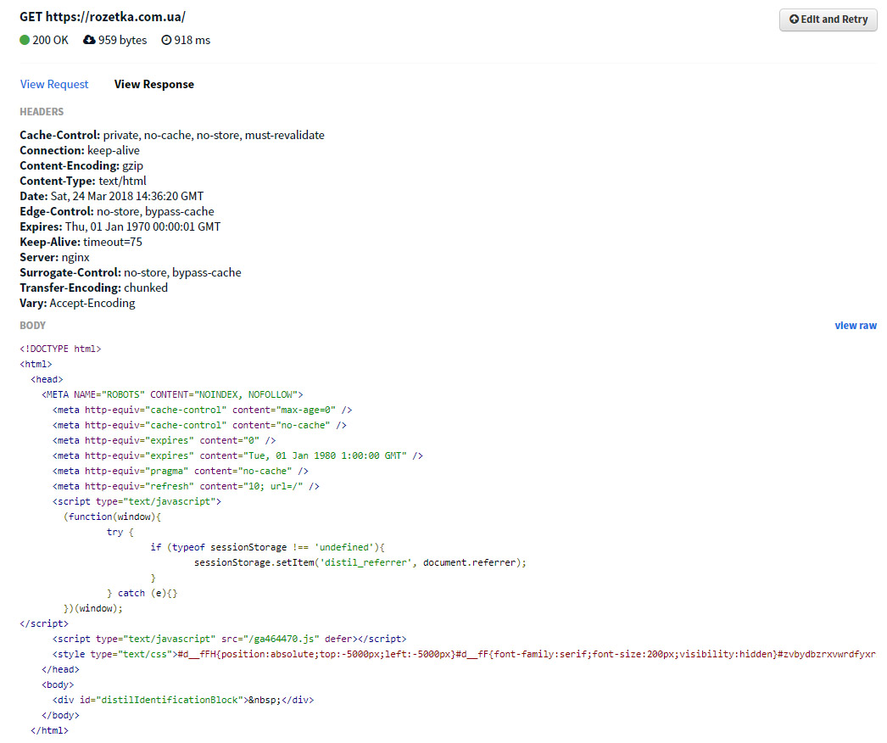
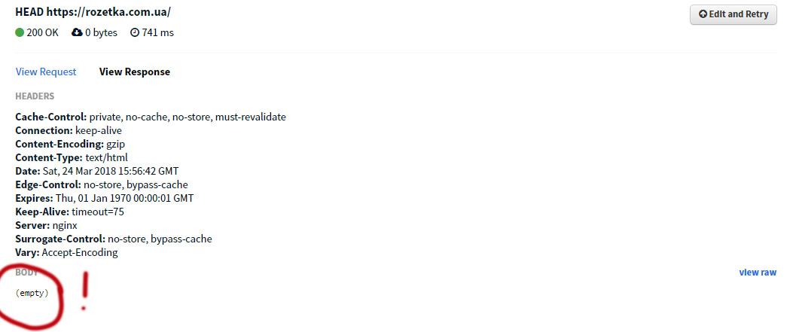

Task 1. Read.
Task2. Play with Chrome Developers Toolkit (DevTools), and "Network" tab.
Trello
Duolingo
Hurtom
SoundCloud
the list of headers

Task3. What are differences between HTTP version 1.0 and 1.1?
HTTP/1.0
- для кожного запиту/відповіді потребує нового з'єднання.
HTTP/1.1
- може стабільно тримати з'єднання для декількох запитів;
- потребує уточнення host:, бо може працювати з декількома доменами на сервері.
How to pass user-data via GET? via POST? what is the diff?
GET
- запрошує та повертає дані із сервера;
- ІДЕМПОТИЧНИЙ - отримує однаковий результат при однакових запитах;
- при запиті даних використовує URL, тому обмежений в кількості даних довжиною URL;
- менш безпечний, через видимість даних в URL.
POST
- передає та повертає дані;
- може отримувати різні відповіді, при предачі однакових даних. Не є ІДЕМПОТИЧНИМ;
- при надсиланні даних, використовує html структуру, тому більш безпечний,
та може передавати більші об'єми даних.
Few samples of websites (and cases) where POST method is used
SoundCloud

YouTube

Task4. Use the "telnet" program.

Task5. Use actions on "Network" tab.
Використовував запис скріншотів. Дозволяє візуально відслідковувати завантаження контетнту. Що дає можливість аналізувати його поетапно. З використанням фільтру, можн зручно шукати необхідні файли, сортувати їх по типах.
Task 6. Using the hurl.it
Cache-Control: - кешування контенту в браузері;
private - дані кешуються в браузері, але не в якихось проміжних кешах;
no-cache - при повторному запиті на цю URL, запит буде перевірятися;
no-store - забороняє браузеру зберігати версійність сайту.
must-revalidate - кеш повинен перевіряти стан застарілих ресурсів перед його використанням, і їх не потрібно використовувати.
Connection: - стан з'єднання;
keep-alive - це значить, що можна використати одне TCP з'єднання для декількох HTTP запитів.
Content-Encoding: - спосіб кодування контенту gzip.
Content-Type: - форма і спосіб представлення сутності (тіла).
Date: - дата генерації відповіді.
Edge-Control: - додаткові мождивості кешування контенту.
Expires: - дата імовірного терміну закінчення сущності. Тоді я не знаю в даному випадку(Thu, 01 Jan 1970 00:00:01 GMT) що це значить????
Keep-Alive: - час з'єднання.
Server: - сервер nginx.
Surrogate-Control: - теж щось пов'язане із керуванням кешування.
Transfer-Encoding: - надійний механізм пакетування даних chunked;
Vary: - інформує проксі сервер, що необхідно зжати ресурс.
Task 7. Using the hurl.it
Task 8. What is the different with GET request?
Метод GET отримує всі дані запиту + контент сайту (сутність), HEAD - тільки дані запиту (шапку).